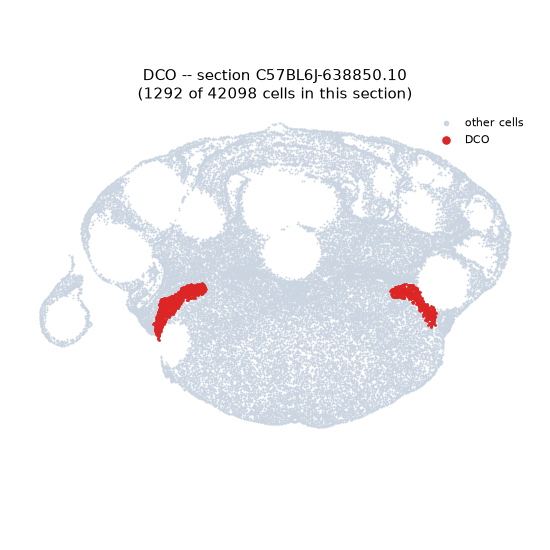
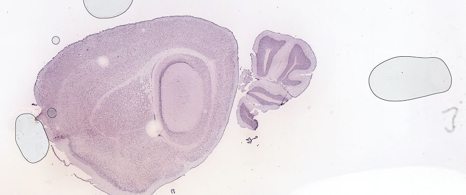
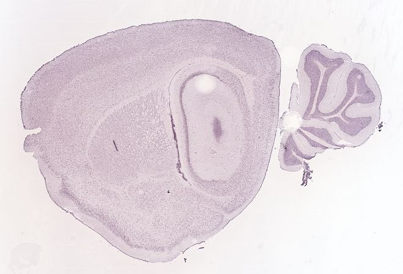
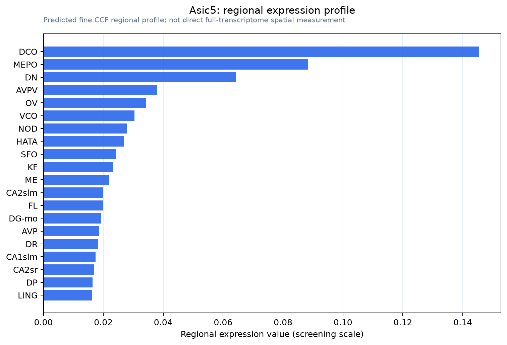

Asic5
Bile acid-sensitive ion channel (BASIC) (Acid-sensing ion channel subunit family member 5) (Amiloride-sensitive cation channel 5) (Brain-liver-intestine amiloride-sensitive Na(+) channel) (BLINaC)
Spatial tier: STRICT_EXCLUSIVE · Class: ION_CHANNEL · Top region: DCO (Dorsal cochlear nucleus) · Positive regions: 4/554
51.2Discovery Score
39.0Targetability Score
CEvidence grade C
What this means: Asic5: predicted fine-region profile is strict-exclusive, with 4 positive regions out of 554 (limit 12); direct spatial validation is required.
Direct spatial evidence
MERFISH REGION LOCATOR

DIRECT ALLEN ISH

DIRECT ALLEN ISH

Regional expression figure

Predicted WMB × fine-CCF profile; not direct full-transcriptome spatial measurement.
Spatial profile
Evidence and specificity
- Evidence status
- PREDICTED_FINE
- Direct sources
- None; predicted localization only
- Exclusive threshold
- 12 positive regions out of 554
- Spatial specificity
- 0.408
- Top-region fraction
- 0.174
- Filter status
- PASS
Interpretation limits
- Cell-type-to-region projection is imputed expression, not direct spatial measurement.
- Adult reference atlases do not establish stability across age, sex, strain, state, or disease.
- Transcript abundance does not guarantee protein abundance or genetic-tool performance.